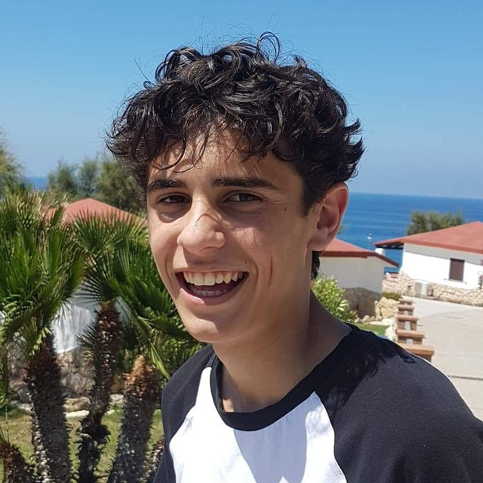
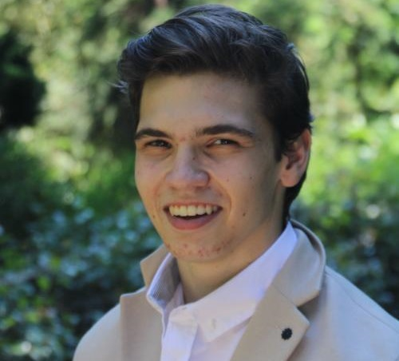
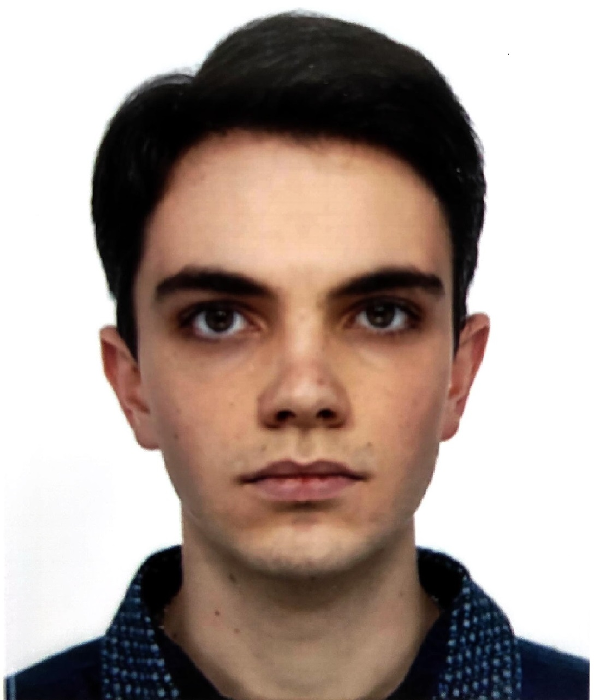

{{ define "pageaccueil" }}
<div>
    <section id="presentation">
        <div class="text_presentation">
            <h1>Groupie Tracker</h1>
            <p>
            Le but de ce projet est de réaliser un site web regroupant des artistes. 
            Vous pouvez parcourir les différentes pages du site web pour découvrir les artistes, leurs dates de concerts et les lieux de leurs concerts.
            </p>
        </div>
    </section>
    <section id="but_projet">
        
        <div class="but">
            <h1>But du projet :</h1>
            <p>Le but de ce projet est de pouvoir avoir des informations sur les artistes et les groupes de musique du monde entier.</p>
        </div>
    </section>
    
    <section id="presentation_person">
        <div class="person">
            
            <h1>Flavio CORMERAIS</h1>
            <p>Liaison Api/Golang et liaison Golang Html/Css</p>
        </div>
        <div class="person">
            
            <h1>Marius BOURSE</h1>
            <p>Gestion des erreurs (500 et 400) et liaison Api/Golang</p>
        </div>
        <div class="person">
            
            <h1>Jules OUTIN</h1>
            <p>
                Gestion de la partie Html/Css</br>
                Mise en place du Jamboard</br>
                Écriture du Readme
            </p>
        </div>
    </section>
</div>

{{ end }} 